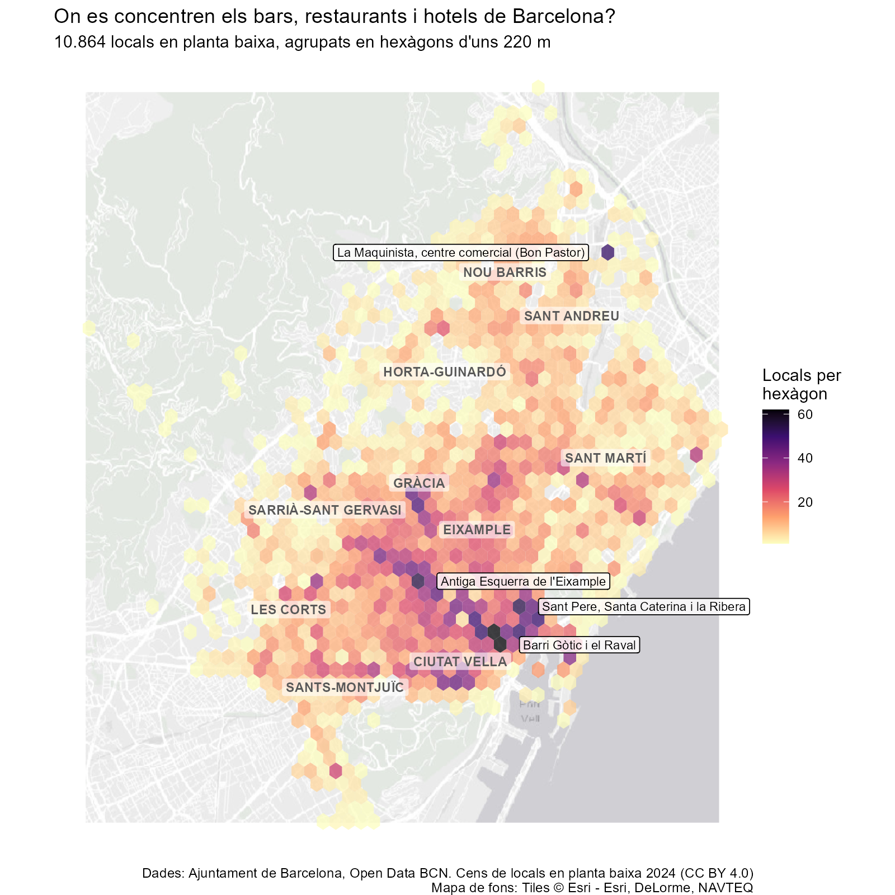

On es concentren els bars, restaurants i hotels de Barcelona?
Hexagon binning · PAC2, Visualització de dades (UOC)

Dades: Ajuntament de Barcelona, Open Data BCN. Cens de locals en planta baixa 2024 (CC BY 4.0). Mapa de fons: Tiles © Esri - Esri, DeLorme, NAVTEQ. Elaborat amb R i ggplot2.
Elaboració: Amat Cantí Mallofré. PAC2, Visualització de dades (UOC), octubre de 2026.